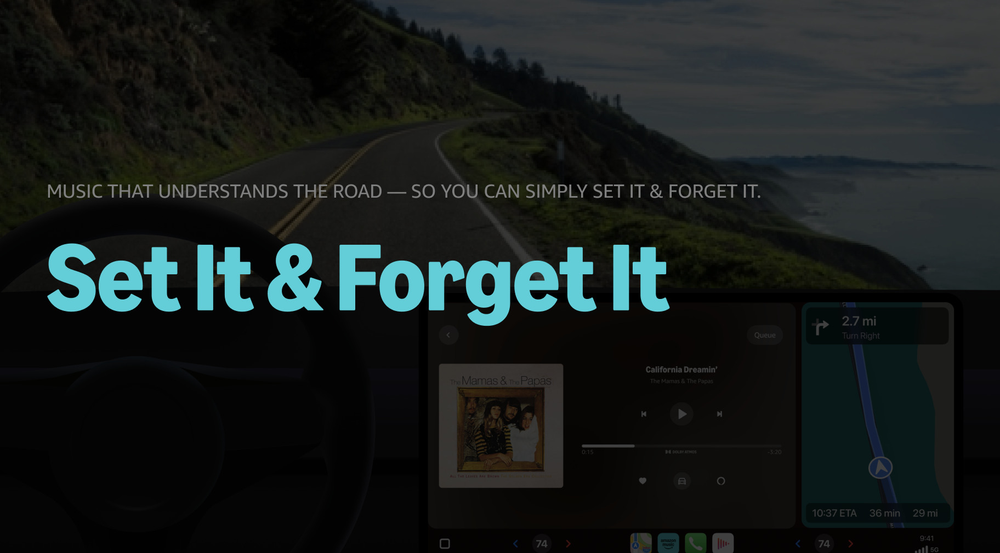
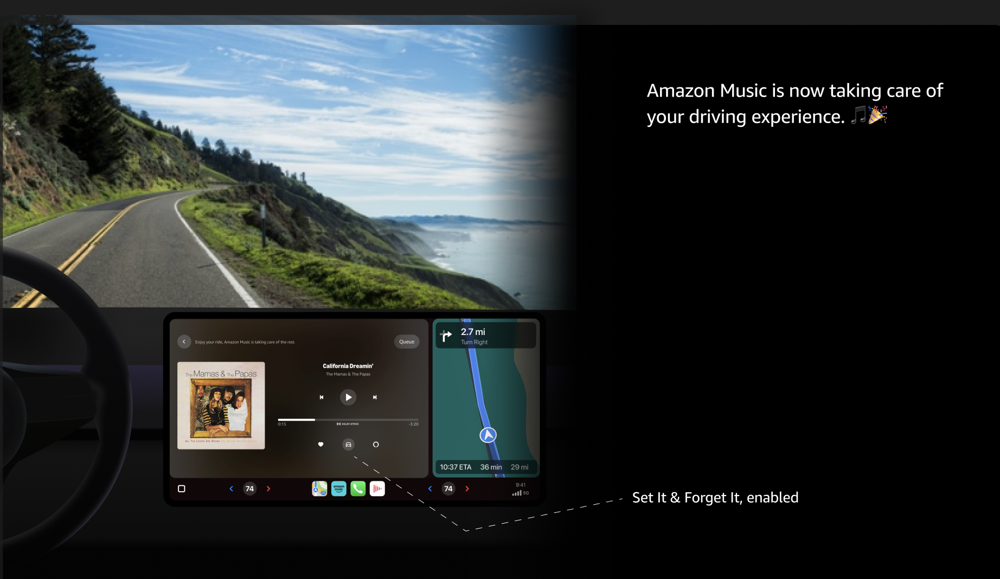
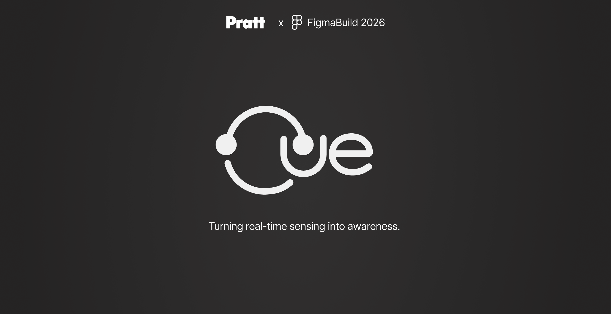
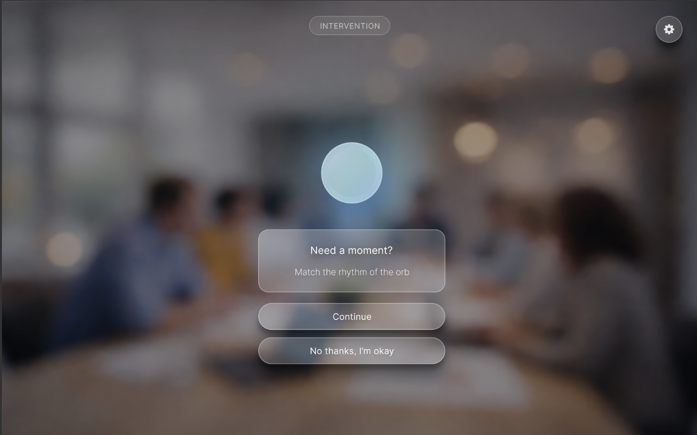

Projects
(Generated Text with ChatGPT)Below are some projects that reflect my approach to user experience design, research and problem-solving.
Amazon Music: The Intelligent Driving Companion


A design concept focused on enhancing the in-car music experience using voice interaction.
- Focus: Hands-free interaction and contextual personalization
- What I did: Explored how Alexa adapts music based on driving context and user behavior
- Key Learning: Context-aware systems create more seamless experiences
Cue - A Wellness Experience Design


A concept project exploring how wearable technology can support stress awareness through real-time feedback.
- Focus:Interoception and user awareness
- What I did:Designed a system using smart glasses and a wristband to provide subtle cues
- Key Learning:Balancing intervention with minimal distraction is key